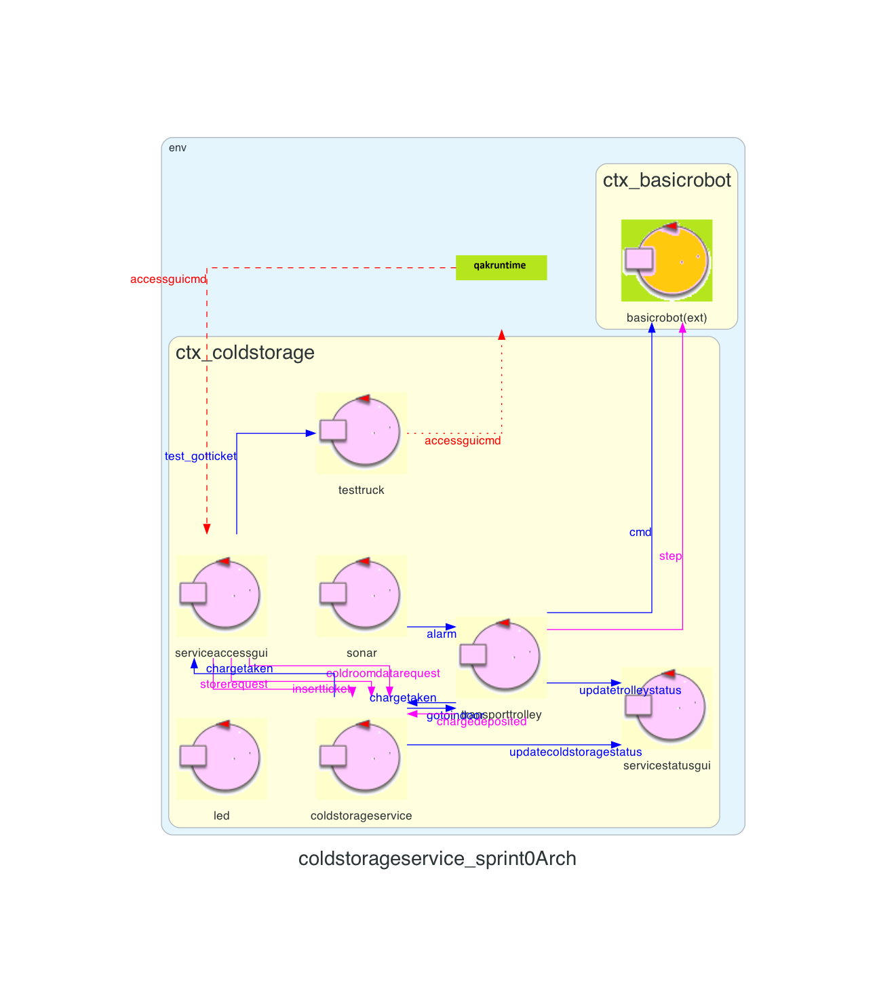
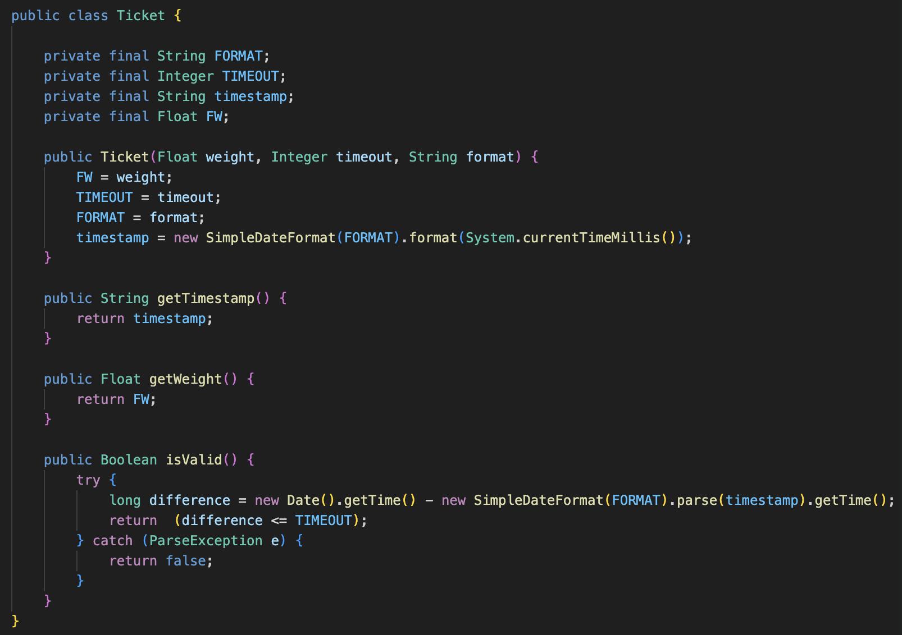
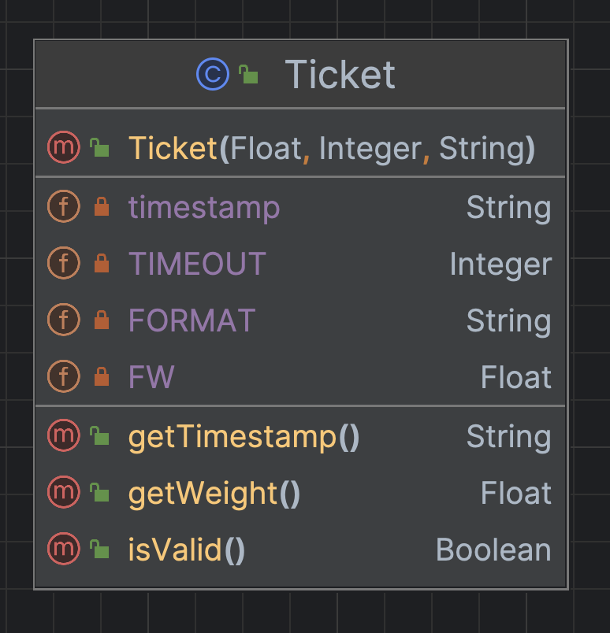
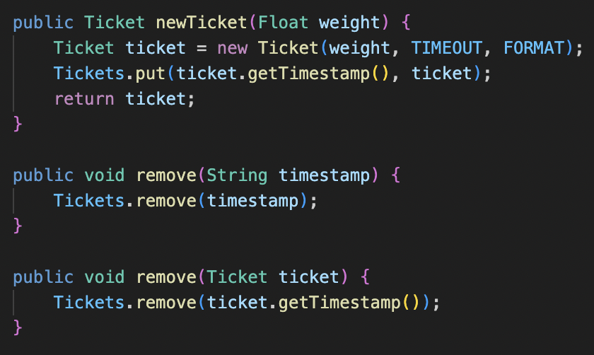
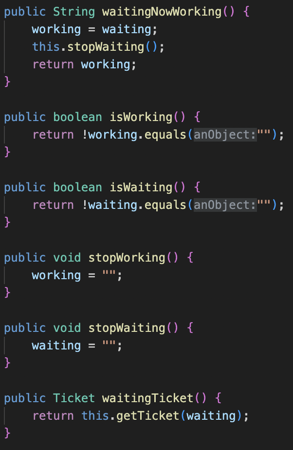
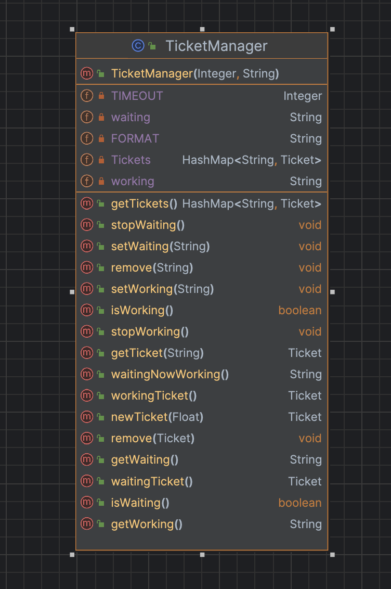

Introduction
Lo Sprint1 si impegna ad analizzare il core-business identificato dallo Sprint0, identificato dai componenti Transport Trolley e ColdStorageService. Ci occupiamo dunque di analizzare il sistema relativamente alla gestione del TransportTrolley, in particolare durante le operazioni di "goToINDOOR" e "goToPORT".A tal fine i macro-componenti ColdStorageService e Transport Trolley vanno approfonditi identificando punti critici e valutando i costi di eventuali soluzioni.
Requirements
Descrizione del
TemaFinale23
Goals dello Sprint1 :
- Identificare ed analizzare tutti i problemi relativi ai requisiti che coinvolgono ColdStorageService e Transport Trolley
- Formulare un modello del sistema composto dal ColdStorageService e dal Transport Trolley e quindi fornire un'architettura logica del sistema
- Realizzare ai fini di test un simulatore in grado di interfacciarsi con il sistema
- Testare il sistema
Requirement analysis
Chiarimenti del committente
L'interazione con il committente ha permesso di chiarire alcuni aspetti del progetto:- Qualora un Fridge Truck debba scaricare un carico superiore alla portata massima
del Transport Trolley per il momento si adotta la politica di rifiutare a priori tale
richiesta.
Il committente richiede tuttavia un'analisi dei costi relativa allo scenario in cui il Transport Trolley accetti carichi che superano la sua capacità massima di carico, obbligandolo così ad effettuare più giri per soddisfare la richiesta di store. - Quando il Transport Trolley ha completato tutte le richieste al momento presenti nel sistema torna alla HOME. Se durante il tragitto dalla ColdRoom alla HOME si presenta una nuova richiesta di azione di carico e scarico il Transport Trolley deve avere l'accortezza di direzionarsi direttamente alla INDOOR, senza quindi passare prima dalla HOME.
- Il Transport Trolley per raggiungere una determinata posizione della Service Area non deve per forza percorrere sempre la strada ottimale, ma non dovrebbe nemmeno fare giri particolarmente inefficienti. Quindi come conclusione vi è un minimo di tolleranza nei suoi spostamenti.
Chiarimenti con il committente
Al committente piace questa gestione dei Ticket?Problematica:
Se un conducente errando inesrisce il Ticket di un altro conducente, il sistema non è in grado di riconoscere l'errore e, supponendo che i due conducenti trasportino un peso diverso, verrà conseguentemente visualizzato un peso errato della Cold Room.
Possibile Soluzione:
Il conducente oltre ad inserire il Ticket, inserisce anche un secondo valore, come ad esempio il peso del carico che sta trasportando.
Sistema
Lo Sprint1 prevede l'interazione tra due componenti principali: ColdStorageService e Transport Trolley.Ai fini di test includiamo nelle interazioni anche la ServiceAccessGUI che rappresenta in questo Sprint in componente proattivo che fungerà dunque da simulatore. Questa verrà analizzata nello Sprint successivo, ovvero lo Sprint2.
Analisi
Dai requisiti espressi nel Tema Finale e dall'analisi già effettuata nello Sprint0, in questo Sprint occerre analizzare le entità:- ColdStorageService: che si occupa di gestire le richieste di store e i movimenti del Transport Trolley
- Transport Trolley: gestisce le richieste del ColdStorageService ed invia comandi di più basso livello al BasicRobot23
- BasicRobot: entità che riceve comandi dal Transport Trolley e guida il DDR-Robot (Virtual Robot che è la parte Tecnology Dependent)
Service Area (Requisito 1)
Data la descrizione della stanza e l'immagine fornita dal committente, si è deciso di modellare la Service Area come un rettangolo, circoscritto da 4 mura, contentente due ostacoli fissi di cui uno è la Cold Room.- HOME: area della stessa dimensione del Transport Trolley, in cui il TransportTrolley si trova all'avvio del sistema
- INDOOR: zona lungo il perimetro, dove il TransportTrolley deve recarsi all'arrivo di una insertticket valida
- Port: zona posizionata su un ostacolo che identifica il punto di scambio tra il TransportTrolley e la ColdRoom
TransportTrolley e DDR-Robot (Requisito 2)
Il TransportTrolley e il DDR-Robot sono due entità distinte, ma che interagiscono tra loro, per effettuare le operazioni di carico e scarico.In particolare:
- Carico della merce presso l'INDOOR
- Trasporto della merce dall'INDOOR alla PORT
- Scarico della merce presso la PORT
Note
Il committente ci fornisce:- La mappa della stanza
- BasicRobot
Analisi del Problema
L'esplorazione del core-business del servizio porta all'analisi dei due macro componenti, TransportTrolley e ColdStorageService, a cui corrispondono indipendenti discussione dei problemi ed osservazioni.Transport Trolley
Il committente mette a disposizione il BasicRobot23 che permette di guidare il DDR-robot. Questo componente risulta decisamente utile poichè ci permette di riciclare tutto il codice già presentato ed analizzato a lezione. Ovvero ci permette di introdurre il concetto di griglia e dunque ci risulta possibile identificare la posizione del TransportTrolley e degli ostacoli all'interno della mappa, non più con i path e dunque i classici comandi come: vai avanti, vai indietro, gira a destra di 90° e gira a sinistra di 90°, bensì con delle cordinate.(Raccolta di tutti i comandi utilizzabili sul BasicRobot23)
Il BasicRobot ci fornisce infatti un Mapper che ci permette di mostrare la mappa della stanza come una griglia, un Planner che individua il path che il DDR-Robot deve percorre per raggiungere un determinata posizione (evitando gli ostacoli) ed un Path Executor che esegue il path calcolato dal planner.
È dunque possibile rappresentare la mappa della stanza come una Matrice MxN, ovvero come una griglia di coordinate.
È dunque ora possibile identificare la posizione del TransportTrolley e degli ostacoli all'interno della mappa:
- HOME -> (0,0)
- INDOOR -> (0,4)
- PORT -> (4,3)
- OSTACOLO -> (2,3)
ColdStorageService
Per quanto riguarda i meccanismi di gestione delle richieste in arrivo, le problematiche da affrontare sono principalmente tre.1 - Concomitanza di richieste da parte di Fridge Truck diversi
Il committente a seguito della review dello Sprint0 ha confermato che i Ticket vengono inseriti dai conducenti dei Fridge Truck solo presso la zona Indoor.Ciò lascia comunque la questione di un eventuale inserimento di più Ticket da parte di più conducenti dei Fridge Truck nel caso in cui l'INDOOR presenti più postazioni e dunque più conducenti vengano serviti in contemporanea. Si è deciso di non permettere questa opzione, e quindi i conducenti dei Truck devono mettersi "in coda" in attesa del proprio turno. Questo perchè:
- il sistema è in grado di servire un carico per volta
- nell'attesa del completamento della richiesta del primo Truck in fila, altri potrebbero andare oltre il limite di tempo del proprio Ticket, che però essendo già stato inserito (e confermato) risulterà ancora valido.
Il sistema non ammette una coda di Truck alla zona Indoor.
Dopo che il Transport Trolley da conferma al Fridge Truck tramite messaggio "charge taken" di aver preso in
carico la richiesta, si dirige verso la ColdRoom impiegando un certo tempo. Il Fridge Truck è allora libero di
lasciare la zona INDOOR, e quindi il servizio potrebbe accettare un nuovo Ticket.Individuamo quindi due Ticket che in contemporanea ColdStorageService può gestire:
- quello relativo al carico che il Transport Trolley sta trasportando -> WorkingTicket
- quello del Fridge Truck in attesa alla zona INDOOR -> WaitingTicket
Il sistema può accettare un Ticket mentre il TransportTrolley sta ancora
terminando la richiesta
del precedente. Il servizio perciò gestisce al massimo due Ticket contemporaneamente.
La sequenza di interazioni è quindi la seguente:
- Quando un Fridge Truck inserisce il proprio Ticket, nel caso il servizio dia conferma di validità, viene chiesto al TransportTrolley di recarsi presso la zona carico. In questo caso diciamo che il Ticket è in attesa (Waiting).
- Quando il Trolley da conferma di Charge Taken e si dirige verso la ColdRoom, il Ticket viene segnato come in lavorazione (Working) e il Fridge Truck è libero di abbandonare la zona INDOOR.
- In questo momento un'altra richiesta di inserimento Ticket può essere gestita dal sistema. Questo nuovo Ticket rimarrà in stato Waiting fino a che il TransportTrolley non avrà depositato il carico corrente e richiesto al servizio se è presente un nuovo Ticket.
Si può pensare che il TransportTrolley comandi indirettamente il passaggio dei
Ticket da Waiting a
Working, comunicando
a ColdStorageService quando ha preso il carico dal Truck e quando lo ha depositato nella ColdRoom.
2 - gestione stato ColdRoom e richieste di storage
Dato il tempo materiale di spostamento del carico da INDOOR a ColdRoom dovuto al movimento del TransportTrolley, e il grado di variabilità nel tempo tra richiesta di storage e inserimento del Ticket da parte dei Fridge Truck, serve una strategia per l'aggiornamento della capacità della ColdRoom stessa.Non possiamo dare per scontato che ogni scarico vada a buon fine: un Truck potrebbe chiedere un Ticket e non presentarsi mai, oppure il Ticket stesso potrebbe scadere. Anche nel caso in cui la richiesta venga correttamente presa in carico, potrebbe comunque verificarsi un malfunzionamento al Transport Trolley che gli impedisca di arrivare alla Cold Room e dunque di terminare l'azione di carico e scarico. Il momento ideale per aggiornare il peso all'interno della ColdRoom è per ciò a termine di un deposito avvenuto con successo.
La quantità contenuta nella ColdRoom va aggiornata a deposito avvenuto.
Ciò però pone un altro problema: se un Truck richiede di scaricare un certo peso prima che vengano completate le
altre
richieste, si potrebbe verificare una situazione di "overbooking" della ColdRoom.Decidiamo di considerare ogni richiesta di Storage non ancora completamente soddisfatta come una prenotazione di una certa quantità di peso nel frigo. Il controllo all'arrivo di ogni richiesta di store prenderà in considerazione sia il peso effettivo che quello prenotato. Nel caso in cui la ColdRoom appaia teoricamente piena, il servizio prima di respingere la richiesta ha premura di controllare eventuali Ticket scaduti, e conseguentemente liberare lo spazio allocato. Qualora non siano presenti Ticket scaduti, la richiesta verrà respinta.
Questo meccanismo potrà portare il servizio a respingere carichi che in breve tempo si sarebbero rivelati accettabili, ma si tratta di casi molto rari. Con questo sistema di allocazione logica del peso siamo sicuri di non mandare mai il servizio in stato di overbooking, accettando solo richieste che si è sicuri di poter gestire.
Solo quando il TransportTrolley avrà comunicato di aver depositato nella ColdRoom il carico che attualmente sta gestendo verrà aggiornato il peso del contenuto reale del frigo e di conseguenza deallocato quello prenotato.
I Ticket hanno anche la funzione di prenotazione di spazio all'interno della
Cold Room
La validità dei Ticket può essere verificata solo quando tale informazione
potrebbe influenzare l'accettazione dei Fridge Truck successivi.
I Ticket sono univocamente distinti da una sequenza di numeri pari al timestamp
di quando la
richiesta è stata effettuata, e vengono gestiti unicamente da ColdStorageService.
3 - comunicazione con TransportTrolley
Essendo il Transport Trolley l'entità che si occupa di muovere il DDR-Robot e che quindi è a conoscenza del metodo di rappresentazione a coordinate della Service Area, è consigliabile la ColdStorageService gestisca solo le richieste ad alto livello e dunque non sia a conoscenza delle coordinate. Così facendo la ColdStorageService si occuperà di gestire le richieste e comandare il Transport Trolley, senza esplicitare le coordinate, ovvero tramite i comandi:- Andare in INDOOR, per soddifare la richiesta di un Fridge Truck
- Andare in HOME, se non ci sono Fridge Truck da servire
- Da dove si trova alla INDOOR per caricare gli alimenti
- Dalla INDOOR alla PORT
ColdStorageService ha una visione astratta della zona di movimento del Robot: ne
conosce solo i punti di interesse.
Ricordiamo che per il momento il committente desidera un servizio che rifiuti i Fridge Truck che
richiedano
uno scarico di
alimenti che supera la portata
massima del Transport Trolley. Quindi, quando la ColdStorageService ordina al Transport
Trolley di caricare/scaricare
un carico, lo effettua senza passarli alcun parametro. Questo andrebbe contraddetto nel caso il sistema
accettasse
carichi da parte dei Fridge truck che
superano la portata massima del robot, obbligandolo ad effettuare più giri per la medesima richiesta. In
questo caso infatti bisognerebbe tenere conto del peso totale di carico da trasportare, in modo da riuscire ad
identificare il
numero di giri necessario per soddisfare la richiesta. Il Committente ha richiesto una analisi dei costi
per valutare successivamente se supportare anche questa
casistica.Analisi dei costi
- Complessità: il sistema risulterebbe di maggiore complessità rispetto al modello creato. Occorrerebbe infatti aggiungere la logica riguardante il numero di giri che il Transport Trolley deve fare. Occorrerebbe anche valutare se la decisione sul numero di giri da effettuare debba essere di competenza della ColdStorageService o del TransportTrolley.
- A livello prettamente economico il sistema risulterebbe meno redditizio per il Committente, poichè il TransportTrolley impiegherebbe più tempo per soddisfare una richiesta, e quindi il numero di richieste soddisfatte in un'unità di tempo sarebbe minore. Dunque se i FridgeTruck portano allo stesso guadagno indipendentemente dal peso del carico, il sistema risulterebbe meno redditizio.
- Effettuando più giri occorrerebbe stimare la tempistica media di un giro del TransportTrolley, in modo da poter stimare il tempo di attesa di un FridgeTruck e dunque riuscire a stimare il Ticket Exipartion Time in modo da far scadere il minor numero di Ticket possibile. Questo andrebbe a complicare la logica di gestione dei Ticket.
Per il momento qualunque richiesta eccedente il peso massimo trasportabile dal DDR
Robot verrà respinta
Inserimento Ticket
Nello scenario in cui un conducente inserisce un Ticket errato, ovvero quando durante l'inserimento del Ticket, il conducente, effttuando un errore di battitura, carica un Ticket inesatto. In questo caso, il sistema respinge la richiesta del conducente il quale dovrà abbandonare l'INDOOR.Il sistema fornisce indicazioni al conducente sul motivo per cui la
richiesta è stata respinta
Interazioni
| Messaggio | Mittente | Destinatario | Semantica messaggio | Descrizione |
|---|---|---|---|---|
| insertticket | ServiceAccessGUI | ColdStorageService | Request | Semantica Request perché all'inserimento del ticket il conducente del Fridge Truck deve sapere immediatamente l'esito dell'inserimento. Conterrà il numero del ticket inserito. |
| replyinsertticket | ColdStorageService | ServiceAccessGUI | Reply | Reply alla insertticket, conterrà l'informazione della validità del ticket precedentemente inserito. |
| storerequest | ServiceAccessGUI | ColdStorageService | Request | Semantica Request perché il conducente del Fridge Truck vuole sapere immediatamente se c'è posto per il suo carico. La richiesta conterrà il numero di Kg del carico da scaricare. |
| replystorerequest | ColdStorageService | ServiceAccessGUI | Reply | Reply alla storerequest, conterrà il numero del ticket nel caso il carico sia stato preso in considerazione, altrimenti bisogna comunicare che la richiesta è stata rifiutata dal sistema. |
| chargedeposited | transporttrolley | ColdStorageService | Request | Semantica Request perchè quando il Transport Trolley comunica che ha scaricato il carico alla ColdRoom deve necessariamente sapere quale sarà la sua successiva mossa: se procedere alla INDOOR per soddifare un altro Fridge Truck oppure se andare in HOME perché non si sono rischieste sospese nel sistema. |
| replychargedeposited | ColdStorageService | transporttrolley | Reply | Reply alla chargedeposited, conterrà la prossima mossa del Transport Trolley: se andare alla INDOOR per soddifare un altro Fridge Truck oppure se andare in HOME perché non si sono rischieste sospese nel sistema. |
| chargetaken | transporttrolley | ColdStorageService | Dispatch | Semantica Dispatch perché il Transport Trolley deve comunicare il fatto che abbia caricato il carico che in quel momento si trovava alla INDOOR, senza aspettarsi in cambio alcuna informazione. |
| chargetaken | ColdStorageService | ServiceAccessGUI | Dispatch | Il ColdStorageService propaga il messaggio chargetaken alla ServiceAccessGUI in modo tale da informare il conducente del Fridge Truck che il suo carico è stato preso dal Transport Trolley e che quindi se ne può andare. |
| gotoindoor | ColdStorageService | transporttrolley | Dispatch | Semantica Dispatch perché il ColdStorageService comunica al Transport Trolley di occuparsi di soddisfare il Fridge Truck. Mentre il Transport Trolley lavora il ColdStorageService deve essere in grado di accettare le richieste che arrivano nel frattempo. |
| coldroomdata | ColdStorageService | ServiceAccessGUI | Dispatch | Semantica Dispatch perché il ColdStorageService comunica in maniera fire-and-forget alla ServiceAccessGUI il peso corrente della ColdRoom ogni volta che questo varia. Questo messaggio serve solo ad informare la ServiceAccessGUI del peso corrente della ColdRoom. |
Codice QAK per la modellazione del sistema: ColdStorageService.qak
Architettura logica
Il sistema da noi modellato, presenta la seguente architettura logica:

Test plans
Occorre verificare che tutti i Test soddisfino i requisiti del Committente| Test | Entità coinvolte | Scenario | Comportamento atteso |
|---|---|---|---|
| MultipleRequestsHandling | ColdStorageService | Dalla ServiceAccessGUI vengono richieste alla ColdStorageService due richieste consecutive: un insertticket e successivamente,dopo aver ricevuto il messaggio replyinsertticket di validità del ticket, un storerequest con peso inferiore alla capacità massima del robot. Al fine di verificare se il sistema accetta richieste mentre si sta servendo una richiesta di un Fridge Truck. | La ServiceAccessGUI alla seconda richiesta di storerequest riceve una risposta affermativa. |
| TicketExpired | ColdStorageService | La ServiceAccessGUI richiede un storerequest e successivamente dopo TICKETTIME secondi invia la richiesta di insertticket. | La ServiceAccessGUI riceve un messaggio replyinsertticket che dichiara l'invalidità del ticket. |
| UpdateWeight | ColdStorageService | La ServiceAccessGUI richiede un storerequest con un carico di FW Kg e successivamente un insertticket. | Quando la ColdStorageService riceve chargedeposited ci si aspetta che il suo contatore del peso presente nella ColdRoom sia stato aggiornato con FW Kg in più. |
| TransportTrolleyServiceTruck | ColdStorageService TransportTrolley |
La ColdStorageService richiede tramite la gotoindoor al Transport Trolley di andare alla INDOOR per soddisfare una richiesta di un Fridge Truck. | La ColdStorageService dopo un lasso di tempo non troppo lungo riceve un messaggio di chargetaken seguito,non immediatamente , da un messaggio chargedeposited. |
Project
Per implementare la gestione dei Ticket ed in particolare i Keypoint 1, 2, 3, 5 e 6, abbiamo deciso di utilizzare un classe java Ticket che contiene le informazioni relative al ticket stesso ed una classe java TicketManager che si occupa di gestire i ticket.Entrambe le classi sono modellate come POJO (Plain Old Java Object), dove il TicketManager è stato implementato come Singleton.
Ticket.java
Questa classe rappresenta il Ticket stesso, si occupa dunque di mantenere il Timestamp di creazione del Ticket (corrispondente ad un ID univoco) e il Timeout che rappresenta dopo quanto tempo il Ticket deve scadere.In questa maniera, il tempo di scadenza del Ticket non solo risulta personalizzabile da parte del Committente, bensì è anche possibile esprimere diverse scadenze per Ticket diversi. Questa classe oltre ai metodi Setter e Getter, tipici dei POJO, presenta anche una funzione isValid che restituisce un booleano che indica se il Ticket è scaduto o meno, ovvero se la differenza tra il Timestamp attuale e quello generato al momento di creazione del Ticket è maggiore o minore del tempo di scadenza.
Occorre utilizzare un SimpleDateFormat per la gestione del Timestamp, in particolare per la conversione da String a Date e viceversa.

UML Ticket

TicketManager.java
Il TicketManager è la classe che gestisce i Ticket, e viene qui implementata come Singleton. Il TicketManager viene dunque istanziato all'interno della ColdStorageService, che è dunque l'unica che ha accesso ai Ticket.Il TicketManager si occupa quindi di gestire i Ticket in base ai messaggi che riceve dalla ServiceAccessGUI, in particolare si occupa di creare i Ticket, di verificare la loro validità e di eliminarli una volta scaduti.
Per fare ciò il TicketManager contiene una lista di Ticket, che viene aggiornata in base ai messaggi ricevuti.

Viene inoltre definito il metodo waitingNowWorking, che utilizza i metodi: isWorking, isWaiting, stopWorking e stopWaiting, per gestire la transizione del biglietto in attesa a quello in lavorazione.
Una volta gestito il Ticket, questo viene eliminato dalla lista dei Ticket.

UML TicketManager

By
Tassinari Gabriele, email: gabriele.tassinari2@studio.unibo.it ,
Baraldi Leonardo, email: leonardo.baraldi@studio.unibo.it ,
Koss Krystian, email: krystian.koss@studio.unibo.it

GIT repo: https://github.com/4utotune/ColdStorageService/
Tassinari Gabriele, email: gabriele.tassinari2@studio.unibo.it ,
Baraldi Leonardo, email: leonardo.baraldi@studio.unibo.it ,
Koss Krystian, email: krystian.koss@studio.unibo.it
GIT repo: https://github.com/4utotune/ColdStorageService/